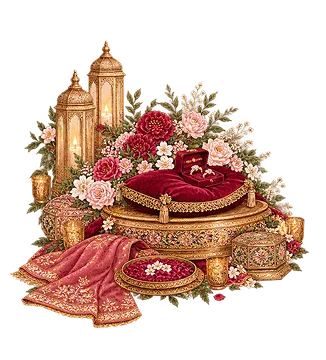
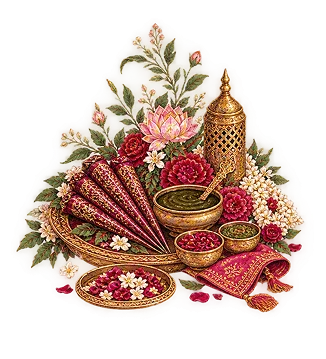
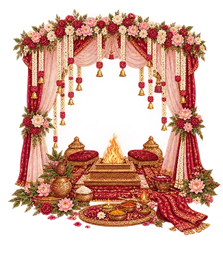

Chi. Kaushik Sharma
Son of Shri Ramesh Chandra Sharma & Smt. Sunita Sharma
Grandson of Late Shri Pandit Brij Mohan Sharma & Late Smt. Kamla Devi Sharma
Mr. Patidar and Family
we cordially invite you to grace the auspicious occasion of the marriage of…
Son of Shri Ramesh Chandra Sharma & Smt. Sunita Sharma
Grandson of Late Shri Pandit Brij Mohan Sharma & Late Smt. Kamla Devi Sharma
Daughter of Shri Rajesh Kumar Verma & Smt. Meera Verma
Granddaughter of Late Shri Hari Prasad Verma & Late Smt. Shanti Devi Verma
Save the Date
Some stories begin with grand gestures. Ours started with a simple conversation.
Friendship grew into something more, and we realized life's best moments were the ones we shared together.

Sharma Residence, Jaipur
Thu, 5 Feb 2026 7:00 PM

Sharma Residence, Jaipur
Fri, 6 Feb 2026 11:00 AM
Sharma Residence, Jaipur
Fri, 6 Feb 2026 4:00 PM
The Grand Palace, Jaipur
Fri, 6 Feb 2026 7:30 PM

The Grand Palace, Jaipur
Sat, 7 Feb 2026 8:00 PM
Royal Banquet Hall, Jaipur
Sun, 8 Feb 2026 8:00 PM
Shri Suresh Sharma & Family (Chacha-Chachi)
Shri Manoj Sharma & Family (Tau-Tai)
Smt. Asha Gupta & Family (Bua)
Shri Rajendra Mehta & Family (Mama-Mami)
We can’t wait to celebrate this special day with you. Thank you for being part of our journey.


Mr. Patidar and Family
Your Presence Means the World to Us